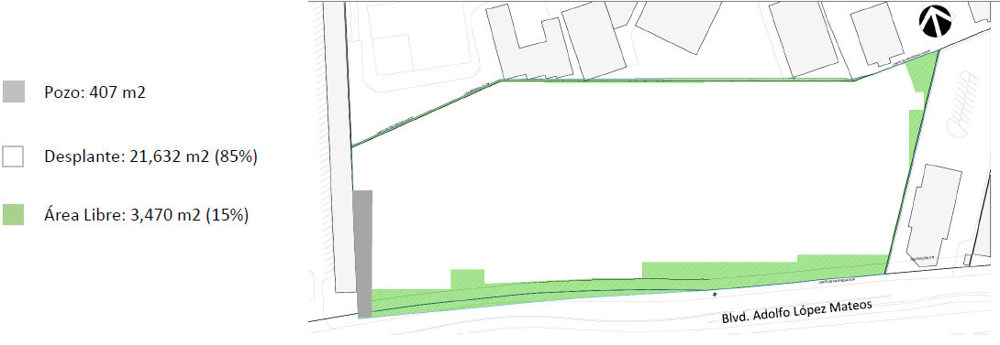
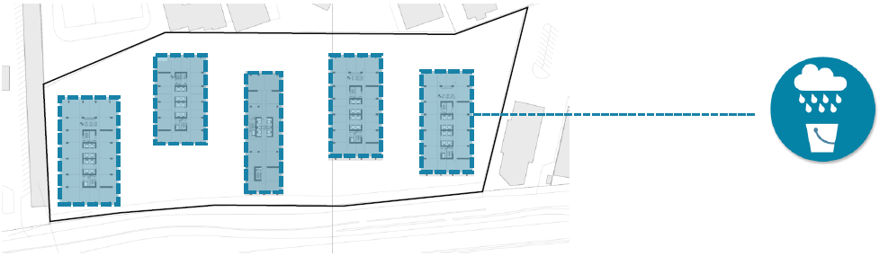

Agua
Acuífero
- El área libre del proyecto es de 15.20%, misma que contará con materiales permeables.
- Se aprovechará la mayor parte del agua pluvial (potabilización para oficinas, etc.) y se infiltrará el agua
pluvial excedente en los meses de lluvias.

Drenaje
- La descarga se hará con cumplimiento en la norma federal 001 Pozo de Infiltración
- Las aguas grises y negras serán tratadas en forma integral en la planta de tratamiento para su reutilización en los
usos determinados en la memoria hidráulica
- Estamos en proceso de obtención de factibilidad de Hidráulica otorgada por SACMEX
Aprovechamiento y reuso del agua pluvial
- Se potabilizarán 50 m 3 /día de agua pluvial el 100 del agua para uso oficinas será agua pluvial potabilizada
- En la memoria pluvial se establecerá el balance de agua y el uso de la misma en el proyecto
- Estamos en proceso de obtención de las gestiones otorgadas por SACMEX para el sistema alternativo
- La descarga se hará con cumplimiento en la norma federal 001 Pozo de Infiltración
- Las aguas grises y negras serán tratadas en forma integral en la planta de tratamiento para su reutilización en los usos determinados en la memoria hidráulica
- Estamos en proceso de obtención de factibilidad de Hidráulica otorgada por SACMEX
Aprovechamiento y reuso del agua pluvial
- Se potabilizarán 50 m 3 /día de agua pluvial el 100 del agua para uso oficinas será agua pluvial potabilizada
- En la memoria pluvial se establecerá el balance de agua y el uso de la misma en el proyecto
- Estamos en proceso de obtención de las gestiones otorgadas por SACMEX para el sistema alternativo
El
agua de lluvia de todas las azoteas será captada
para potabilización y consumo humano en la Torre
de Oficinas
Se
cumplirá con de la Norma Oficial Mexicana
NOM 127 SSA 1 1994 y contará con los mecanismos
de control para garantizar su calidad
El
proyecto cuenta con 2 plantas de tratamiento de
agua residual (una por fase).
El
tratada agua generada en la edificación se usará
posteriormente en los WC , torres de enfriamiento
de oficinas , lavado de autos y pisos
Tratamiento y reuso de agua
- Se propondrá que en la PTAR se incorpore el agua pluvial en el proceso terciario a través de filtración y desinfección, lo anterior para no sobrecargar el tratamiento primario en la planta de tratamiento
Factibilidad de servicios hidráulicos
- Estamos en proceso de obtención de factibilidad hidráulica otorgada por SACMEX
- SACMEX determinará si se usa el pozo existente o haremos uno nuevo (ubicación seleccionada)
Ahorro en el consumo de agua potable
- Equipos ahorradores de agua en sanitarios, lavabos, regaderas, etc
- Se implementará un ahorro en el consumo de agua potable (especificado en la memoria Hidrosanitaria)
- Se presentará un Programa de Mantenimiento Periódico Preventivo y Correctivo del Sistema Alternativo de Captación y Aprovechamiento de Agua Pluvial, de la Planta de Tratamiento de Aguas Residuales y de la Planta Potabilizadora de Agua Pluvial